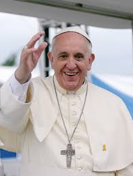

Jorge Mario Bergoglio nasceu numa família de imigrantes italianos. O seu pai, Mario Giuseppe Bergoglio, nascido na cidade de Turim (Piemonte) em 2 de abril de 1908 e falecido em 24 de setembro de 1961, era um trabalhador ferroviário. Sua mãe, Regina Maria Sivori, nascida em Buenos Aires, de pais de origem piemontesa e lígure, em 28 de novembro de 1911 e falecida em 8 de janeiro de 1981, era dona de casa. Casaram-se na capital argentina no dia 12 de dezembro de 1935. Mario Giuseppe também jogava basquetebol no San Lorenzo, um dos cinco grandes do futebol argentino e cujas origens haviam sido impulsionadas por um padre. Jorge tornar-se-ia torcedor sanlorencista, já tendo afirmado que não perdeu nenhum jogo do título argentino de 1946, quando tinha então dez anos.Em carta aos dirigentes do clube que o visitaram uma semana após tornar-se Papa, relembrou: "Tem vindo à minha memória belas recordações, começando desde a minha infância. Segui, aos dez anos, a gloriosa campanha de 1946. Aquele gol de Pontoni!". O jovem Jorge Mario (quarto menino em pé, da esquerda para a direita, na terceira fileira) no tempo em que estudava no Colégio Salesiano de Buenos Aires Nascido e criado no bairro de Flores, atual sede do San Lorenzo,o Papa Francisco era o mais velho de cinco filhos, como irmãos: Oscar Adrián Bergoglio (1938–1997), Marta Regina Bergoglio (1940–2007), Alberto Horacio Bergoglio (1942–2010) e Maria Elena Bergoglio, nascida em 1948, sua única irmã viva.
Foi o primeiro Bispo de Roma a ser membro da Companhia de Jesus (Jesuítas), o primeiro nascido nas Américas (ou do chamado Novo Mundo) e no Hemisfério Sul, bem como o primeiro pontífice não nascido na Europa em mais de 1 200 anos(o último havia sido o sírio Gregório III, morto em 741) e o primeiro Papa a utilizar o nome de Francisco. Tornou-se arcebispo de Buenos Aires em 28 de fevereiro de 1998 e foi elevado ao cardinalato em 21 de fevereiro de 2001 — véspera da festa da Cátedra de São Pedro — com o título de Cardeal-presbítero de São Roberto Belarmino, por São João Paulo II. Foi eleito papa em 13 de março de 2013. Ao longo de sua vida pública, o Papa Francisco destacou-se por sua humildade, preocupação com os pobres e compromisso com o diálogo inter-religioso. Francisco teve uma abordagem menos formal ao papado do que seus antecessores, tendo escolhido residir na casa de hóspedes Domus Sanctae Marthae, em vez de nos aposentos papais do Palácio Apostólico usados por papas anteriores. Ele sustentava que a Igreja deveria ser mais aberta e acolhedora. Ele não apoiava o capitalismo definido "selvagem", o marxismo ou as versões marxistas da teologia da libertação. Francisco manteve as visões tradicionais da Igreja em relação ao aborto, casamento, ordenação de mulheres e celibato clerical. Opunha-se ao consumismo e apoiava a ação sobre as mudanças climáticas, foco de seu papado com a promulgação da encíclica Laudato si'. Na diplomacia internacional, ajudou a restaurar temporariamente as relações diplomáticas completas entre os Estados Unidos e Cuba e apoiou a causa dos refugiados durante as crises migratórias da Europa e da América Central. Desde 2018, foi um oponente vocal do neonacionalismo. Seu papado deu ênfase ao combate de abusos sexuais por membros do clero católico, tornando obrigatórias as denúncias e responsabilizando quem as omite.

"Mario Giuseppe jogava basquetebol no San Lorenzo, um dos cinco grandes do futebol argentino e cujas origens haviam sido impulsionadas por um padre. Jorge tornar-se-ia torcedor sanlorencista, já tendo afirmado que não perdeu nenhum jogo do título argentino de 1946, quando tinha então dez anos.[10] Em carta aos dirigentes do clube que o visitaram uma semana após tornar-se Papa, relembrou: "Tem vindo à minha memória belas recordações, começando desde a minha infância. Segui, aos dez anos, a gloriosa campanha de 1946. Aquele gol de Pontoni"
A última aparição pública de Francisco foi na Praça de São Pedro, na Cidade do Vaticano, no domingo de Páscoa, 20 de abril de 2025, onde fez seu último discurso de Páscoa e pediu um cessar-fogo em Gaza.Ele morreu às 07:35 hora local (UTC+02:00) na segunda-feira de Páscoa, 21 de abril de 2025, aos 88 anos, em sua residência na Casa Santa Marta.Sua morte, anunciada pelo cardeal Kevin Farrell através de uma declaração em vídeo pelo Vatican News,foi causada por um derrame cerebral, que levou ao coma e a um colapso cardiocirculatório irreversível. A morte do papa deu início ao interregno papal e a um período de nove dias de luto conhecido como novemdiales ("nove dias" em latim). Seu funeral ocorreu em 26 de abril de 2025.Os cardeais eleitores chegaram a Roma para comparecer à congregação de cardeais e decidiram que 7 de maio de 2025 seria o início do conclave definido para eleger o sucessor de Francisco.Em 8 de maio, Robert Francis Prevost, que foi feito cardeal por Francisco em 2023, foi eleito Papa Leão XIV. Tumba de Francisco na Basílica de Santa Maria Maior O testamento espiritual de Francisco, datado de 29 de junho de 2022 e divulgado pelo Vaticano no dia de sua morte, repetiu seu desejo de ser sepultado na Basílica de Santa Maria Maior, em Roma. Após sua morte, ele foi sepultado ali, de acordo com seu testamento, tornando-se o primeiro papa a ser sepultado na Basílica de Santa Maria Maior desde Clemente IX, no ano 1669.Seu testamento termina assim: "Que o Senhor dê a merecida recompensa àqueles que me quiseram bem e que continuarão a rezar por mim. O sofrimento que esteve presente na última parte de minha vida eu o ofereço ao Senhor pela paz no mundo e pela fraternidade entre os povos."
"Devem ser acolhidos com respeito, compaixão e delicadeza. Evitar-se-á, em relação a eles, qualquer sinal de discriminação injusta. Estas pessoas são chamadas a realizar na sua vida a vontade de Deus e, se forem cristãs, a unir ao sacrifício da cruz do Senhor as dificuldades que podem encontrar devido à sua condição— Catecismo da Igreja Católica"-Enfatizando que os Homossexuais devem ser respeitados
"Os pobres não são uma fórmula teórica do partido comunista, mas o centro do Evangelho" — Destacando que o apoio aos vulneráveis é uma prioridade cristã.
"Acolhei-vos uns aos outros, como Cristo nos acolheu para a glória do Pai" — Enfatizando a necessidade de acolhida na comunidade.
| Obras |
|---|
| Francisco, papa |